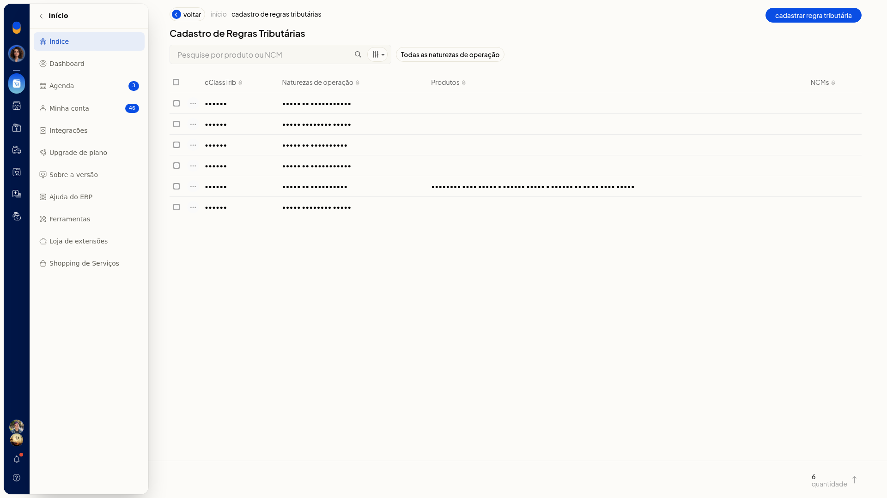
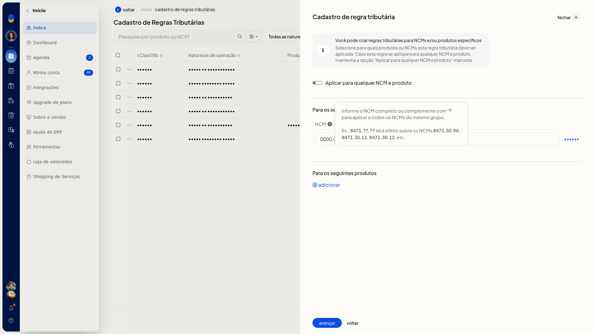
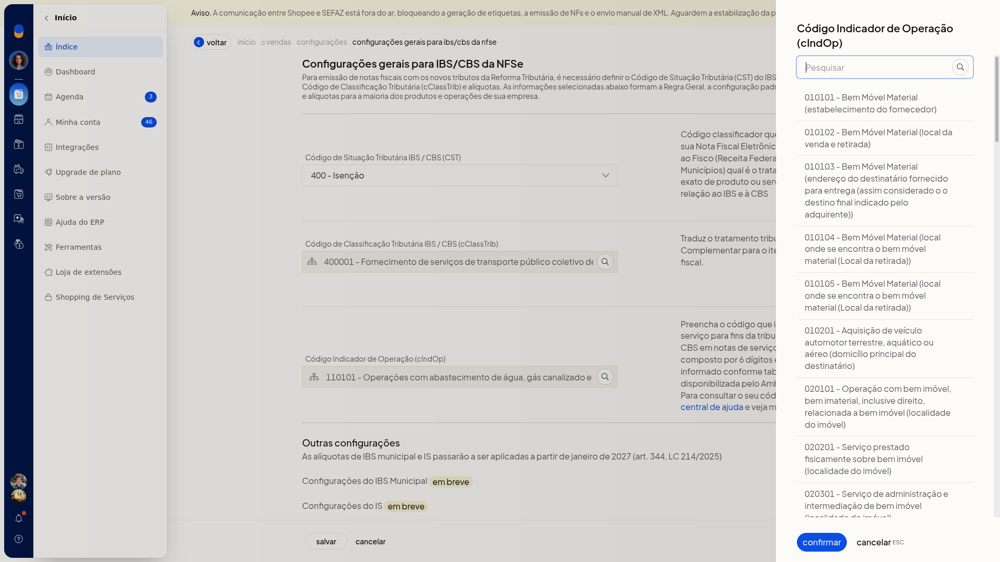

Reforma Tributária: erros e validações
No ERP da Olist, Tributação (RTC) define a classificação, as alíquotas e o cálculo de IBS e CBS da Reforma Tributária do Consumo para NF-e, NFC-e e NFS-e. Você confere aqui o que a tela aceita antes de gravar a regra geral, a regra específica de produto ou o cálculo na emissão.
A regra geral vale como padrão. A regra específica, por NCM, produto e natureza de operação, vale só quando o produto não deve seguir esse padrão.
Pré-requisitos
- Naturezas de operação já cadastradas na empresa, para marcar a regra específica e filtrar a lista.
- NCM e identificação do produto, quando a regra específica não valer para todos os itens.
Importante
- IBS Municipal e IS aparecem como em breve, com efeito citado para janeiro de 2027. Não preencha esses campos agora.
- No cálculo de NF-e e NFC-e, o Regime Normal passa a ser obrigatório em janeiro de 2026. Simples e MEI permanecem em simulação até o uso obrigatório em 2027.
- A seção NFSe tem só a configuração geral e o cálculo. Não há Cadastro de regras tributárias para serviço.
- A lista de regras não importa planilha. A pesquisa refina só por produto, ncm ou Não refinar.
Instruções
-
Acesse Configurações > Configurações ERP > Tributação (RTC).

-
Em NFe e NFCe, abra Configuração dos tributos e códigos de classificação. O texto da tela informa que essa regra geral será o padrão dos produtos.

-
Selecione o CST na lista da tela: 000 - Tributação integral, 010 alíquotas uniformes, 011 alíquotas uniformes reduzidas, 200 Alíquota reduzida, 221 Alíquota fixa proporcional, 400 Isenção, 410 Imunidade e não incidência, 510 Diferimento, 515 Diferimento com redução de alíquota, 550 Suspensão, 620 Tributação Monofásica, 800 Transferência de crédito, 810 Ajuste de IBS na ZFM, 811 Ajustes, 820 Tributação em documento específico ou 830 Exclusão da Base de Cálculo.
-
Informe cClassTrib pela pesquisa da tela. Clique em Pesquisar, escolha o código e clique em Confirmar. Cancelar fecha a pesquisa sem aplicar um código novo. Nem todo código da tabela oficial aparece na lista.

-
Informe CBS e IBS UF com vírgula no decimal, como 0,90 e 0,10.
-
Para conferir o cálculo, em NFe e NFCe abra Habilitar cálculo de tributos da Reforma Tributária. Com Habilitar o cálculo de tributos da Reforma Tributária marcado, o sistema calcula e envia IBS e CBS à SEFAZ nas notas. Clique em Voltar.

-
Para uma regra que não segue o padrão, em NFe e NFCe abra Cadastro de regras tributárias e clique em Cadastrar regra tributária.

-
Em Dados do IBS/CBS, selecione o CST, confirme o cClassTrib e preencha CBS e IBS UF no mesmo formato da regra geral. Clique em Avançar.


-
Mantenha Aplicar para qualquer NCM e produto ligado para valer para todos os itens. Desligue o controle para informar um NCM e/ou um produto.


-
No NCM, informe o código completo ou use ? para um grupo, como 8471.??.??. O código completo é reformatado para 0000.00.00. Grave a linha no salvar da linha.


- No produto, pesquise por nome, SKU ou GTIN e informe o Código (SKU). Clique em Avançar.


- Marque as naturezas de operação que devem usar a regra, como Venda de mercadorias (Saída). Clique em Salvar regra. A regra só é criada nesse clique. Voltar sai sem criar a regra.


- Para localizar uma regra já salva, use Pesquise por produto ou NCM e refine por produto, ncm ou Não refinar. Em Todas as naturezas de operação, escolha a natureza e clique em aplicar. cancelar fecha o filtro sem aplicá-lo.


- No menu da linha, a ação disponível é excluir. Não clique em excluir se a regra deve permanecer.

- Em NFSe, abra Configuração dos tributos e códigos de classificação. Selecione o CST na mesma lista de produtos, confirme cClassTrib e informe cIndOp pela pesquisa da tela. Cancelar fecha a pesquisa sem confirmar o código.



- Em NFSe, abra Habilitar cálculo de tributos da Reforma Tributária e marque Habilitar o cálculo de tributos da Reforma Tributária para NFS-e. Com a opção marcada, o sistema passa a considerar os novos campos de IBS/CBS em todas as NFS-e emitidas. Clique em Voltar.

Resultado
A visão de Tributação (RTC) mostra NFe e NFCe e NFSe, e os itens de cálculo podem aparecer como habilitado. A configuração geral exibe o CST, o cClassTrib e as alíquotas atuais. Na NFS-e, a tela também exibe o cIndOp. Cadastro de Regras Tributárias lista as regras salvas com cClassTrib, Naturezas de operação, Produtos e NCMs, além do contador de quantidade.
Informações adicionais
- A pesquisa de cClassTrib no caso de tributação integral pode mostrar códigos como 000001, 000003, 000004, 000005 e 000006. No caso de isenção, um código iniciado em 400001 pode aparecer. Um exemplo de cIndOp na pesquisa é 110101 - Operações com abastecimento de água, gás canalizado e energia elétrica.
- Um exemplo de preenchimento da regra específica é CST 000, cClassTrib 000001 - Situações tributadas integralmente, CBS 0,90 e IBS UF 0,10.